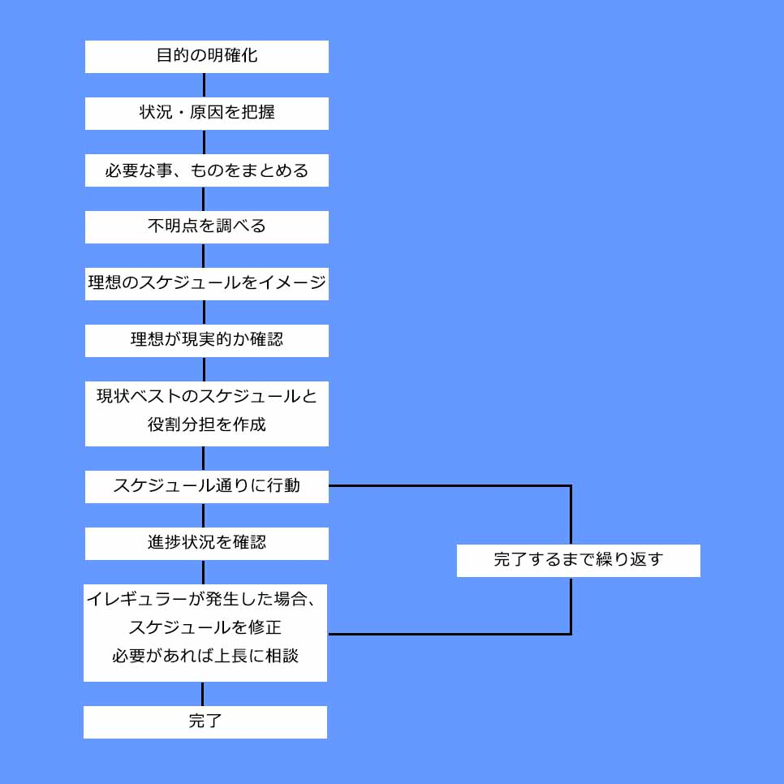

山守滉貴
Yamamori Kouki
生年月日/1994年4月30日
mail/com2.k.y.22@gmail.com
2014年、株式会社御前屋に入社し、工事関係者向けの宿泊施設に配属。翌年2015年には別施設の管理者として配属し、損益、施設、従業員の管理を行う。2019年、スーパーマーケットへの事業展開に伴い、総務部主任として配属。売掛、買掛の管理体制を1から構築。また、総務部主任を兼任しながら自社ホームページを1からリニューアル。さらにECサイト事業に携わり、システム面でのオペレーション構築に貢献。2023年、クラウド会計ソフトへの移行に携わり、初期登録から仕訳登録オペレーション構築に貢献。予てから興味があったプログラミングに携わりたいと思い、転職活動を始める。
アクションやRPGなど様々なジャンルのものをプレイします。攻略方やストーリー内容など、考えさせられるものが好きです。
伏線を回収するストーリーが好きです。展開が読めないものが特に好きです。
2023年4月頃からキャンプを始めました。特に焚き火台で調理をするのが好きです。鉄板を使って焼きそばを作ったりします。
| 2013年 | 神奈川県立元石川高等学校 卒業 |
|---|---|
| 2014年 | 株式会社御前屋 入社 |
| 2014年～2015年 |
宿泊部 配属
|
| 2015年～2019年 |
宿泊施設管理者として勤務
|
| 2019年～2023年 |
総務部主任として配属
|
| 2023年9月 | 株式会社御前屋 退職予定 |
| 長所 |
私は適応力があります。株式会社御前屋に勤めていた際に適応力を培うことができました。入社時は宿泊部に所属し、社会人としての心構えを学びました。翌年には施設管理者として配属し、「人、もの、お金」の管理を経験しました。その後、事業展開に伴い総務部主任に配属し、会社目線の考え方を養いました。様々な部署を経験し、環境に合わせた行動や考え方を学べたため、適応力が培われたと思っています。その適応力で、プログラマーに必要な「言語知識」、「コミュニケーション」、「論理的思考」に活かすことが出来ます。 前職では事務作業を自動化できるツールをExcelVBAで作成していました。具体的なツールとして「請求書自動作成」、「会計ソフトインポートファイル作成」などを作りました。業務の無駄を発見し、自動化できる部分を探して自動化する技術は、プログラマー業務に活かすことが出来ます。 前職では社内部門間の商品移動がありました。部門ごとに出庫、入庫伝票を紙で管理していました。しかし、集計した際は部門ごとの金額が合わないという現象が起きました。原因は片方の部門が伝票を付け忘れるというヒューマンエラーでした。そこで社内共通フォルダにExcelファイルを用意しました。そのファイルに出庫元部門、入庫先部門、商品、金額を選択または入力し、金額が部門ごとに集計されるようにしました。それにより、金額の相違は0になりました。こういった経験から問題の原因を明確にし、具体的な解決策を練ることはプログラマー業務に活かせると思っています。 |
|---|---|
| 短所 |
社会人になったばかりの頃は、相手の顔色を伺い、伝えるべきことも伝えられないことがありました。しかし、会社、組織の目的達成のために、伝えるべき理由を明確にしてからは変わりました。また、前職が地域密着型の経営方針により、様々な人と関わることができる環境も相まってコミュニケーションが向上しました。その時の上司にも「格段に良くなった」とお褒めの言葉を頂きました。チームで進行していくプロジェクトにも活かせると思います。 |
| Java | ★☆☆☆☆ |
|---|---|
| └ Work➁程度の簡単なアプリケーションは作成可能 | |
| ExcelVBA | ★★★★☆ |
| └Work➂の様な請求書自動作成プログラムは作成可能 | |
| HTML・CSS | ★★★★☆ |
| └Work➀の様なホームページの作成可能 | |
| JavaScript | ★☆☆☆☆ |
| └Work➀の様なスライドショーの作成可能 | |
| Photoshop | ★★★☆☆ |
| └Webデザインの作成可能 | |
| Illustrator | ★★★☆☆ |
| └Work➀の様なアイコンの作成可能 | |
| Dreamweaver | ★★★☆☆ |
| └Work➀の様なホームページ作成に使用可能 | |
| ・Java silver SE 11 | ・Excel VBAエキスパート | ・普通自動車免許 |
まだまだ経験が浅いため様々な言語、業務にチャレンジしていきたいと思っています。まずは汎用性の高いJavaを深めるために「Java Gold」の取得を目指して学習しています。今後のキャリアアップとしてはマネジメントが出来るプログラマーを目指したいです。また最終的には会社目線の考え方を持ち、広い視野をもったプログラマーになりたいと思います。
状況により、臨機応変に仕事の進め方を変えていきますが、基本はスケジュールなど事前準備に時間を掛けます。スケジュール通り動き始め、必要であれば修正し、最終ゴールを目指していきます。
